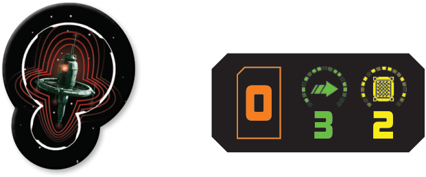

Sensor Buoy

Types: Device, Remote
Sensor buoys are remotes that come in pairs (one red, and one blue, each with its own remote card), and are placed by the Sensor Buoy Suite upgrade card. Beyond being remotes and interacting with that card, they have no additional rules.